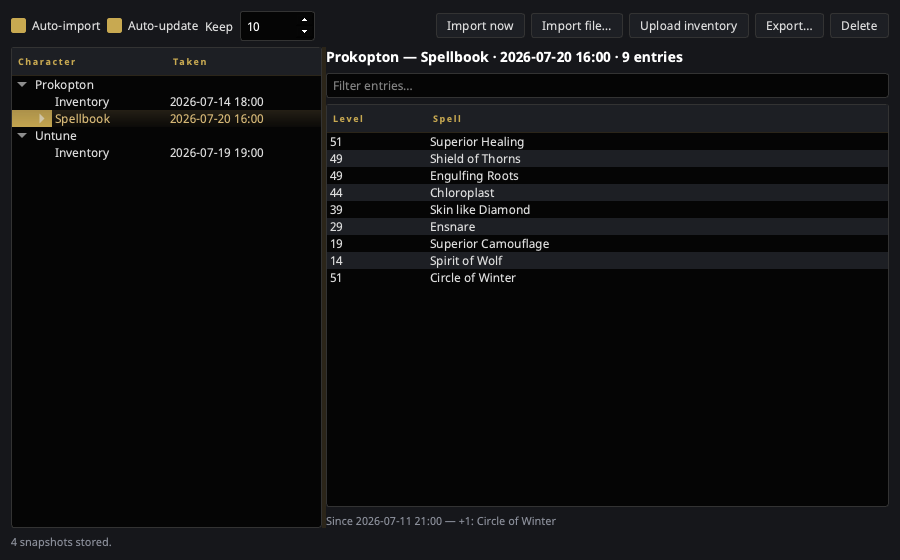

Character Dumps¶
The EQ client can write two snapshots of a character to a text file:
/outputfile inventory
/outputfile spellbook
It drops them in your EverQuest folder as <Character>-Inventory.txt and
<Character>-Spellbook.txt — and overwrites them every time. The game
keeps exactly one copy of each and no history at all, so the dump you took
before that raid is gone the moment you take another.
The Character Dumps window is a library of those files. Every character keeps its own current inventory and its own current spellbook, with the previous few versions behind each one.

Open it from the tray → Character Dumps, or type toggle_dumps in game.
It needs the EQ install directory set in
Settings → General — that is the only place dumps
live.
Layout¶
- Left — a tree of characters. Under each is an Inventory and a Spellbook branch, when that character has one. The branch row is the current snapshot and shows when it was taken; older snapshots hang beneath it, newest first.
- Right — the selected snapshot's contents, with a filter box. An inventory lists Location / Item / Count / ID; a spellbook lists Level / Spell in book page order. Underneath, a line saying what changed since the snapshot before it.
- Bottom — how many snapshots are held and what the last scan did.
Empty inventory slots are dropped on import. The client writes a row for every slot whether or not anything is in it, and keeping them would swamp every comparison.
The toggles¶
| Control | What it does |
|---|---|
| Auto-import | Watch the EQ folder and pull in dumps for a character and type this library has never seen. Also the master switch — off means no scanning at all. |
| Auto-update | When a dump already in the library changes, store the new version as another snapshot. Off keeps the first import and ignores later /outputfile runs. |
| Keep | How many snapshots to hold per character, per type. Older ones are pruned as new ones land. |
Both toggles are on by default. Unlike the pigparse.org upload — which is off until you opt in, because it sends your character to a website — this only reads files the game already wrote and copies them into nParse+'s own data folder.
Re-running /outputfile without having changed anything does not pile up
snapshots: an unchanged dump is recognised by content and dropped.
Buttons¶
| Button | What it does |
|---|---|
| Import now | Rescan the EQ folder immediately. Works regardless of the toggles. |
| Import file… | Take in a dump from anywhere — a backup, another machine, a friend's. A file whose name doesn't say who it belongs to still works; nParse+ reads it and asks which character it is. |
| Upload dumps | Send snapshots to the destination you picked. Works whether or not auto-import is on. |
| Review import… | Only while a p99planner handoff is waiting: re-opens the review page. Right-click it to cancel the handoff instead. |
| Export… | Write the selected snapshot back out in the client's own format, so other P99 tools can read it. |
| Delete | Remove the selected snapshot. With a character row selected, forget that character entirely. |
Uploading your dumps¶
Settings → Sharing has one Send character dumps to picker. It offers two destinations, and Off, which is the default:
| Destination | What it needs | Takes | What happens |
|---|---|---|---|
| pigparse.org character page | A Discord login (same page) | Inventory | Your items are posted to your pigparse.org character page. |
| p99planner.com | Nothing at all | Inventory and spellbook | The export is staged and a review page opens in your browser. You see exactly what would change, and approve it. |
Spellbooks only go to p99planner — pigparse.org's character browser has nowhere to put one, so with pigparse picked a spellbook dump is collected into the library and sent nowhere.
p99planner needs no account, no API key and no login. Instead of applying anything, nParse+ hands the site your raw export and gets back a private claim link; nothing reaches your planner characters until you approve it on that page. The link lasts 24 hours, and later dumps in the same session join the same link — so a five-mule bank run is one review page, not five.
A character's inventory and spellbook are reviewed as one entry, and approving replaces that character's gear, bags and bank and — if a spellbook came with it — that class's scribed spell list. Either one on its own leaves the other alone. One ordering rule falls out of that, and nParse+ handles it for you: a spellbook only applies to a character the planner already has, so inventories are always sent ahead of spellbooks in the same batch. A spellbook for a character p99planner has never seen (or for a Warrior) is listed on the review page as skipped, with the reason, and the rest of the batch imports normally.
The claim link is private
Anyone holding that link can read those exports and import them into their own planner. nParse+ opens it in your browser rather than printing it, and never writes it to the log or shows it on screen. Don't paste it into chat. If it does leak, the exposure is one item list for at most 24 hours, and opening the link burns it.
While a handoff is waiting¶
nParse+ opens the review page for you the first time it stages something, and only then — later dumps in the same session join the link silently, so approving is one page visit rather than one per mule.
Because the link is never displayed, the window is the way back to it. While exports are waiting, the status line says so (with the expiry) and a Review import… button appears next to Upload dumps:
- Click it to re-open the review page — after you closed the tab, for instance.
- Right-click it for Open review page, Copy review link, and Cancel handoff….
Copy review link is the escape hatch for a machine where nParse+ can't launch a browser at all (no default browser, a locked-down desktop). The status line tells you to use it when that happens, and keeps telling you for as long as it's true. Paste the link into any browser to approve the import — but treat it like a password on the way there.
Cancelling releases the staged copy and the link stops working; anything you already approved is unaffected. And if you simply never approve, the link expires after 24 hours and p99planner sweeps it. Nothing reaches your planner characters either way.
Restarting nParse+ forgets a pending link
The claim is held for the session only. Restart before approving and the Review button is gone — the link itself is still valid (it's in your browser history, and live for its 24 hours), and your next upload simply stages a fresh one. The orphan expires on its own.
The Upload dumps button¶
Uploading normally happens on its own as dumps arrive. The button is there for when it shouldn't have to — auto-import off, a dump taken before you started nParse+, or a mule roster you want to send in one go. What it sends follows your selection, narrowest first:
| Selected | What is sent |
|---|---|
| A snapshot | That snapshot, whichever kind it is. |
| A character | That character's current inventory and spellbook. |
| Nothing | Every character's current pair — the whole roster, in one call. |
Anything the destination can't take is dropped rather than refused: send a spellbook while pigparse.org is picked and the status line names the site that does take one. The status line at the bottom reports what happened either way.
Where the files live¶
Snapshots are plain JSON under nParse+'s data directory:
<data dir>/dumps/<Character>/<inventory|spellbook>/<when>-<digest>.json
<data dir> is ~/Library/Application Support/nparseplus on macOS,
%LOCALAPPDATA%\nparseplus on Windows, and ~/.local/share/nparseplus on
Linux. Deleting the folder loses the history and nothing else.
What uploads by itself, and what doesn't¶
Automatic uploading is deliberately narrow — the library is local storage, and only some of what lands in it is something you asked to publish:
| Uploads automatically | |
|---|---|
| A dump you take in game this session | Yes |
| Import now (rescans the EQ folder) | Yes — same files, same source |
| A dump already in the EQ folder at launch | No — collected, not published |
| Import file… (a file you browse to) | No |
| Anything, with Auto-update off | Yes — retention has no say in this |
Import file… never uploads on your behalf. That file may be a backup, an export off another machine, or another player's dump, and none of those were offered up for publishing by being picked in a file dialog. Use Upload dumps when you do want one sent.
Likewise, Auto-update is purely about how much local history to keep. It does not gate uploading in either direction — an earlier version of this let one stale snapshot at startup silence uploads for the rest of the session.
For plugin authors¶
The library publishes two bus events. They mean "a snapshot was stored" — a fact about your local history, which is what an add-on watching the library wants. They are not an "about to be uploaded" signal; uploading is decided separately, by the rules above.
The two events let an add-on react to a dump without polling anything:
| Event | When |
|---|---|
CharacterDumpImportedEvent |
The first snapshot for a character and type. |
CharacterDumpUpdatedEvent |
A tracked dump changed. Carries added / removed entry names. |
from nparseplus_sdk import events
class MyPlugin:
def activate(self, ctx):
self.ctx = ctx
ctx.subscribe(events.CharacterDumpUpdatedEvent, self.on_dump)
def on_dump(self, event):
if event.kind == "spellbook" and event.added:
self.ctx.logger.info("%s learned %s", event.character, ", ".join(event.added))
Both events carry character, kind, captured_at, entry_count,
digest, and path — the stored snapshot, not the game's file. To read the
contents, open the library:
from nparseplus.config.paths import dumps_dir
from nparseplus.core.dumps import DumpKind, DumpLibrary
book = DumpLibrary(dumps_dir()).load_latest("Prokopton", DumpKind.SPELLBOOK)
See Developing plugins for the rest of the plugin contract.